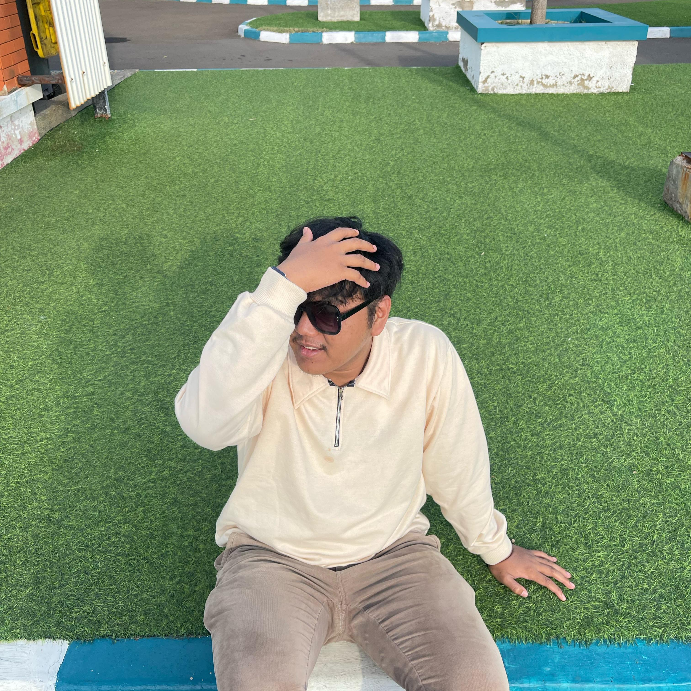

hallooo! kenalin yaa… dia tuh namanya Muhammad Gifari Athalariq ✨
tapi aku sih manggilnya kak gif… atau kadang, sayang. tergantung mood dan kadar gemes aku hari itu
😚
aku tuh bingung sebenernya, gimana bisa ya ada orang yang matanya sipit tapi bisa jadi nilai tambah?
terus kumis tipisnya tuh… bukannya ganggu, malah kayak watermark manis yang bikin dia beda dari yang
lain 😭💖
kak gif itu lucu, bukan karena lawakannya, tapi karena dia bisa ketawa cuma gara-gara aku nyeletuk
hal receh. aku ngelawak dikit, dia udah ngakak kayak denger stand up komedi eksklusif 🤣 dan
anehnya, itu bikin aku ngerasa dihargain banget, kayak kehadiran aku tuh cukup buat bikin dia happy.
dia tuh keras kepala kadang, iya. tapi keras kepalanya itu dibalut sama hati yang super lembut dan
tulus. dia mungkin gak selalu bilang “aku sayang kamu” setiap hari, tapi aku ngerasa itu dari
caranya nanya aku udah makan belum, dari caranya dengerin keluh kesah aku, dari caranya nyemangatin
aku pas lagi down.
buat aku, kak gif bukan cuma cowok biasa. dia bisa jadi temen buat ketawa-ketawa gak jelas, jadi
pasangan buat saling peluk rasa lelah, dan jadi keluarga... yang kehadirannya bikin aku ngerasa
pulang 🫶
jadi ya, kak gif tuh bukan sekadar ‘kak gif’. dia udah kayak rumah kecil yang aku temuin di tengah
hari yang ribut-ribut. dan aku betah banget di situ 🤍
makasih ya udah hadir, udah jadi ‘tempat’ yang gak pernah aku duga sebelumnya. aku gak tau gimana
caranya bales semua kebaikan dan support kamu, tapi aku bakal terus ada selagi bisa... selama kamu
izinin aku buat tetap di situ, di sebelah kamu 💛. Klik gambar atau teks ini untuk melihat apa yang dia suka!